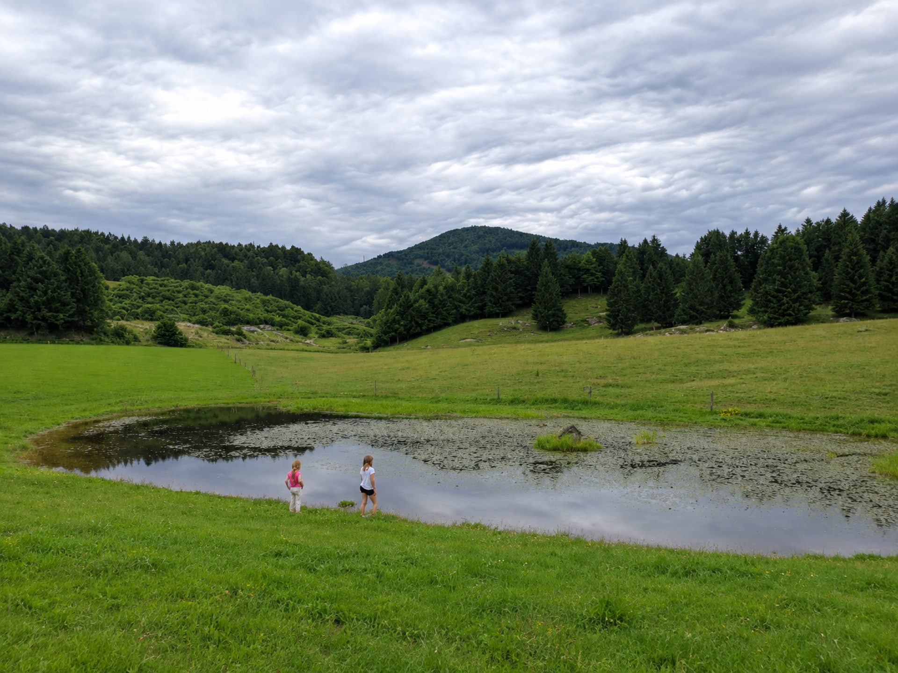

Znamenitost
Predgrižka mlakuža v kateri se med letom nahajajo različne živali vse od račk, čapelj, žab do drugih živali, ki jo obiščejo le ko potrebujejo vodo je ena izmed lepših ampak neznanih znamenitosti planote. Domačini se ob njej vedno radi sprehajamo in raziskujemo kaj se dogaja okoli nje in v njej.